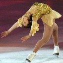

（152）ツーランドット 解答
ABの２種類のマチでテンパイしています。出上がりＡ＞Ｂ、ツモ上がりＢ＞Ａ になるような牌姿の一例を示してください。なお当カテゴリーの基本ルールはココに記載。（by Ｎａｎｂａ）

真理藻 投稿日：2007/01/04(Thu)
新年明けましておめでとうございます。
本年も皆様に幸あることを祈っております(o_ _)o
さて早速152ツーランドットですが、似たような問題を以前拝見したことがありますのでさっくりと(笑
マチ
 ツモ和了
ツモ和了
門前清自摸和 三暗刻 白 の満貫
門前清自摸和 三暗刻 の6400
出和了
になります。
あさみ 投稿日：2007/01/05(Fri)
明けましておめでとう〜、真理藻さん
はい、文句ナシの正解です。(^-^)/
>似たような問題を以前拝見したことが
いろいろあるうちには、そんなことも（^-^；